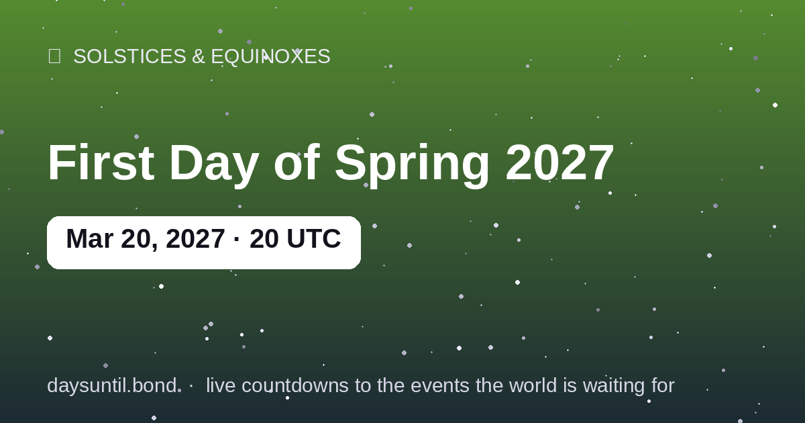

How Many Days Until First Day of Spring 2027?
First Day of Spring 2027 falls on Saturday, March 20, 2027.
The live counter above updates every second in your local time zone. The date and weekday are shown in the event details.

Quick facts
| Exact moment (UTC) | March 20, 2027 · 20:23 |
|---|---|
| Event | March Equinox |
| Hemisphere note | Seasons flip in the Southern Hemisphere |
About First Day of Spring 2027
The march equinox of 2027 falls on March 20, 2027 at 20:23 UTC — the astronomical start of spring in the Northern Hemisphere (autumn below the equator).
Astronomically, this is the moment the Sun crosses the celestial equator heading north — autumn in the Southern Hemisphere. It is also the day the tide of daylight turns: after the March solstice the change is barely minutes per week, then accelerates — the reason the weeks after a solstice feel darker (or lighter) faster than the solstice day itself.
The exact March equinox in 2027
The March equinox occurs on March 20, 2027 at 20:23 UTC. This is the astronomical start of spring in the Northern Hemisphere and the start of autumn in the Southern Hemisphere. The moment is global: the same instant is experienced at different local clock times around the world.
The equinox is not a whole day-long event. It is a precise instant when the Sun crosses the celestial equator moving northward, as seen from Earth. That is why a countdown to the equinox uses an exact UTC timestamp rather than midnight in one country.
What the equinox means for daylight
Around the equinox, day and night are close to equal in length at many latitudes, but they are not exactly 12 hours everywhere. Atmospheric refraction and the fact that sunrise and sunset are measured by the Sun's apparent upper edge affect the observed daylight interval.
After the March equinox, daylight generally continues to increase in the Northern Hemisphere until the June solstice. In the Southern Hemisphere, daylight decreases toward the June solstice.
Astronomical spring versus meteorological spring
Astronomical spring begins at the March equinox, whose exact date and time vary slightly from year to year. Meteorological seasons use fixed three-month blocks: in the Northern Hemisphere, meteorological spring is March, April and May.
The two systems answer different questions. Astronomical seasons follow Earth's position relative to the Sun; meteorological seasons make climate statistics easier to compare because each season has a consistent length.
The equinox is not the same as the solstice
An equinox occurs when the Sun crosses the celestial equator. A solstice occurs when the Sun reaches its greatest apparent distance north or south of the celestial equator. The June and December solstices mark the longest and shortest daylight periods of the year in each hemisphere.
For a plain-language explanation of Earth's seasons, see NASA's seasons resource. The date and time shown here are the event record used by the live countdown.
How to observe the seasonal change
The equinox itself does not produce a visible flash or a sudden change in the sky. The change is noticed over days and weeks through sunrise and sunset times, the Sun's path across the sky and local weather patterns.
If you compare sunrise or sunset times, use the same location and the same time convention each day. Local daylight-saving changes can shift the clock reading even though the astronomical progression is continuous.
Equinox dates through 2030
| Year | March equinox (UTC) | Northern Hemisphere |
|---|---|---|
| 2026 | March 20, 14:46 | Spring begins |
| 2027 | March 20, 20:23 | Spring begins |
| 2028 | March 20, 02:17 | Spring begins |
| 2029 | March 20, 08:01 | Spring begins |
| 2030 | March 20, 13:51 | Spring begins |
Your First Day of Spring 2027 countdown milestones
It is easier to plan against fixed points than against a number that moves. These are the dates on which the countdown to First Day of Spring 2027 passes each marker between now and the day itself — the last one falls on Friday 19 March, when there will be 1 day left.
| Milestone | Day | Date | Remaining |
|---|---|---|---|
| 100 days | Thursday | 10 December 2026 | 100 days to go |
| 50 days | Friday | 29 January 2027 | 50 days to go |
| 30 days | Thursday | 18 February 2027 | 30 days to go |
| 14 days | Saturday | 06 March 2027 | 14 days to go |
| 7 days | Saturday | 13 March 2027 | 7 days to go |
| 3 days | Wednesday | 17 March 2027 | 3 days to go |
| 1 days | Friday | 19 March 2027 | 1 day to go |
How the remaining time breaks down
116 days is the headline, but it is rarely the number that helps. 83 of those are weekdays and 33 fall on a weekend, which is the split that matters if you are planning around work. It is 16 weeks and 4 days, or roughly 3.8 months, or about 2,784 hours.
| Unit | Until First Day of Spring 2027 |
|---|---|
| Days | 116 |
| Weeks | 16 weeks and 4 days |
| Months (approx) | 3.8 |
| Weekdays | 83 |
| Weekend days | 33 |
| Hours | 2,784 |
| Sleeps | 116 |
Working days are Monday to Friday and do not subtract public holidays, which vary by country and employer — the full month-by-month split is on our weekday page for First Day of Spring 2027.